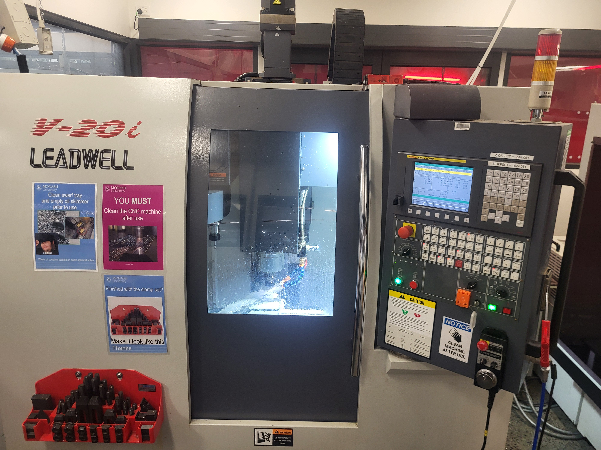

Back to Projects
Solaris Mk II Fluids System
Overview
- High pressure, 3-way pneumatic pilot valve used to actuate main oxidizer valve onboard Solaris Mk II
- Operates under 70 Bar of pressure in temperatures ranging from -20°C to 50°C
- Extremely constrained physical space required small form factor design
- 10 second actuation time with live positional feedback
- Reliable actuation is required to ensure successful engine ignition





My Role
- Designed prototype of the valve assembly using Creo Parametric CAD software
- Utilised Creo Windchill for product data management
- Conducted FEA using ANSYS to ensure design can withstand pressure
- Created CAM programs for manufacturing using Autodesk Fusion package
- CNC machined valve components using a 3-axis mill
- Assembled and tested the valve assembly under pressure
- Designed position feedback PCB using KiCad and Altium Designer
- Iterated on the design to enhance reliability and minimise actuator wear
Results & Impact
- Has now been integrated into 2 team competition rockets
- Performed nominally across 5 launches
- Contributed to HPR winning the Technical Excellence Award at the 2025 International Rocketry Engineering Competition